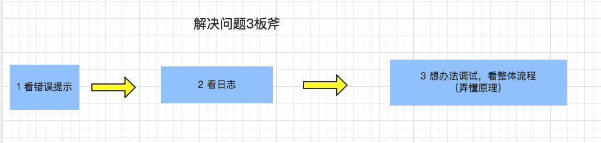

概述
- 本篇总结一些经典的思维方案
1 简单
- 1 简单，让用户操作尽可能简单，不要让用户觉得难用，要让用户用起来一目了然。
-
- 1.1 底层封装好复杂的接口，做很多工作和思考
-
- 1.2 简单不是舍弃功能需求和安全需求，简单是要让用户用起来简单。
-
- 1.3 简单的同时，要能方便的扩展。
-
2 任何情况下，当用户没有提供时，就给一个默认的。
2 用户提示要到位
- 用户提示一定要到位，流程出错了一定要站在用户的角度，说清楚他为什么错了。
-
- 一来用户能够快速知道原因，
-
- 二来你根本没有必要隐瞒自己做了什么，分享出来，会更容易得到帮助与建议。做好可视化。
3 如何提升技术效率
- 加中间件（midware is king）：
-
- 比如要扫描整块硬盘去找一个东西，则加缓存，先在缓存中找，再去硬盘中找。
-
- 比如JVM内存中，要扫描整个老年代中引用新生代的对象，每次要全部扫描效率。改进方案则是专门划分一块小内存，用来记录这个对应关系，并且维护这个对应关系。
- 缓存为王（cache is king）
4 Linux软件的配置方式：
- 客户端程序会去读取配置文件，也可以在命令行输入选项。
- 配置文件又有全局配置文件和用户个人配置文件的区分。
- 优先级如下：
命令行选项> 用户个人配置文件> 全局配置文件 - 经典用法： 只用全局配置文件
4.1 命令行选项
-
命令行选项分类： 开关类选项（表示开启、关闭某一技能）和带参数类选项（表示作用对象、范围）
-
总结来说，命令行选项还是为key＝value服务的，大致分为4种：
-
- 1 短选项 ,表示模式选择 ，比如选择server模式还是client模式 ，直接是-server,-client这样的
-
- 2 短选项加参数 ，其实也是告诉命令一个key=value,比如 wget -o /dev/null (说到底还是为了告诉wget 下载的目标文件是/dev/null)
-
- 3 短选项加长参数 ，比如-Dfile.encoding=UTF-8 ，也是告知一个key=value
-
- 4 短选项,表示某些功能的开关（隐含的意思是加上某个选项就是加一个技能），比如 ls -l -h
5 Linux哲学
- Linux系统中几乎所有的资源都抽象为文件形式保存，包括硬件设备，甚至通信接口等；
- 多个单一小程序组合完成复杂任务，每个小程序仅完成一个简单任务；
- 尽量避免与用户进行交互操作，使用编程方式实现自动化管理；
- 使用文本方式保存软件的配置信息
6 解决技术难题思路
- 运维工作中解决技术问题的思路： 三板斧
-
- 看错误提示、看日志、想办法打开调试功能（这一步其实就是要求你去研究原理，弄懂原理）

7 学习新技术的体会
- 如何总结、学习一样技术、一款开源软件、一个知识点、一个python模块
-
- 1 一定要明白整个过程、整个原理、整个核心链路（梳理核心模型和他的属性，以及核心模型和核心模型之间的关联关系能产生的作用）
-
- 2 一定要画出来架构图
-
- 3 过程中要确定唯一值和核心模型。 核心模型就是“什么人在什么时间什么地点干了什么事”，当中的“什么人”。
7.1 常见的核心模型（也可以理解为任何对象object）,都有自己本身的属性，和它提供的技能
- 比如任何python对象，都有3个属性： id, 对象是什么类型，对象的值
- 比如flask_script插件，它的核心模型是Command子类，它有1 helpinfo ,2 option_list ,3 run()方法 这些属性
-
比如 mongodb中的 任意一个 副本集(replSet),它都有 名称、成员2个属性
-
要总结核心模型(核心对象)的纵向扩展能力和横向扩展能力:
- 任何核心模型(核心对象)都有纵向扩展能力和横向扩展能力。
| 序号 | 对象模型 | 纵向扩展能力 | 横向扩展能力 |
|---|---|---|---|
| 1 | mysql表 | 当列数不够时，可以加列 | 通过关联外键，增加表与表之间的联系 |
| 2 | python class | 随着需求变化，而增加属性 | 某一个属性，是别的class对象。 |
| 3 | c语言结构体 | 可以增加字段 | 某一个字段，是别的struct. |
| 4 | html元素 | 增加字段,比如color=“red”,align=“left”,name=xxx,id=yyy等等， 不一定需要全部用上，但是可以在需要时用上 |
关联子元素、父元素 |
- 上面提到这些是核心模型的纵向扩展能力，有的核心模型之间是有关联关系的，详见服务规划能力
- 核心模型的纵向扩展能力，也就是它自身的能力扩展方式（核心模型的ID不变的情况下，扩展核心模型自身的某个能力或者属性。比如表ID不变，在表里增加一列）。
- 核心模型的横向扩展能力，也就是它和别的核心模型之间的关联关系（一个表ID不够了，再加一个新表，新表是另一个ID）。
7.2 如何抽象唯一值
| 层面 | 唯一值 | 备注 |
|---|---|---|
| TCP协议 | tcp报文 | |
| http协议 | http报文 | |
| Linux内存管理 | 内存页(page) | |
| Linux磁盘管理 | block（将物理相邻的若干个扇区称为了一个簇） | |
| flask-script插件 | Command类 |
8 全局角度
- 对事情，分析问题一定要想办法站在全局的角度，俯瞰全局，看清楚，想明白，想透彻。
-
- 怎么样算全局？可以用画圆的思路，集合的思路（男人和女人，前端和后端，一个Team里面各个小组加起来是一个完整的集合，）
- 对自己服务的对象，当衣食父母，用心服务到位，才是正确的出路。
- 任何技术的学习，一定不是看过，用过就完事。
-
- 很多技术上的东西，看过一遍就忘记，其实真正的原因是自己偷懒了，不是看过一遍就好，看过之后，一定要用自己的方式，存储在脑海中，记在笔记里面。看过之后，一定要自己总结的心得体会，说出来，分享出来，帮助别人。 比如学习一个新的运维服务，关注： 有没有了解整个过程，有没有自动化，有没有监控，有没有应急预案
9 构建Software Infrastructure
开源软件的应用过程(即”三板斧”思路): 安装、配置、使用
其中，软件配置又是重中之重，是考验运维架构师对一个软件技能运用程度的重要衡量指标，
- 熟悉整个过程又可细分一个三板斧:
-
- 1 了解基础配置项的含义和作用。
-
- 2 找到解释文档，可以通过该文档方便查阅各个配置项的含义。
-
- 3 摸清楚该开源软件处理请求的整条核心链路。
-
- 4 使用flask等技术，web化管理该开源软件的配置，并且把配置文件抽象化存入DB，提供相应技能:(包括权限控制、操作记录、RESTful API等)
-
- 5 以多少用到运维工作中和博客的浏览次数 为衡量是否掌握该开源软件的标尺。
-
游戏SRE的一大技能是 事后验证，校验：
-
- 1 自己平时做完任务后，一定要想清楚验证方法，并严格验证。
-
- 2 给别人分配任务时，别人做完了一定要严格验证、校验、验收。
-
- 验证小技巧总结积累：
-
-
- 1 校验数量: 比如校验索引的数量是否还对的上.
-
10 考虑Context
- 任何进程、程序的运行，都要考虑其Context
11 客户端分散
- 解决单点问题的一个思路是前面加一层LB
- 但也可以是客户端分散，客户端随机选择一个服务器，就算其中一个服务器挂了，也只影响部分客户端、不影响全局